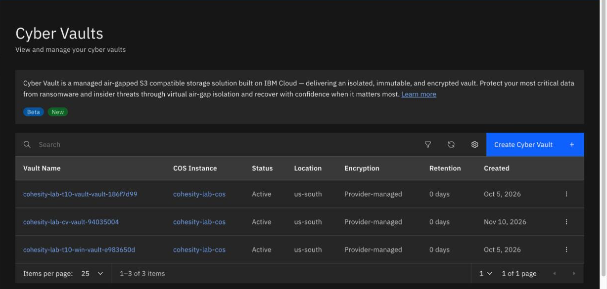
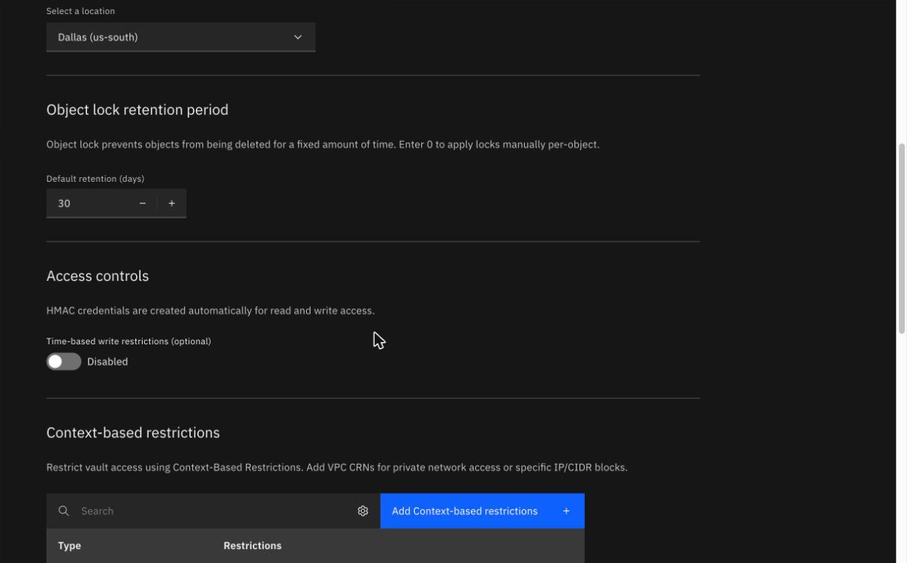
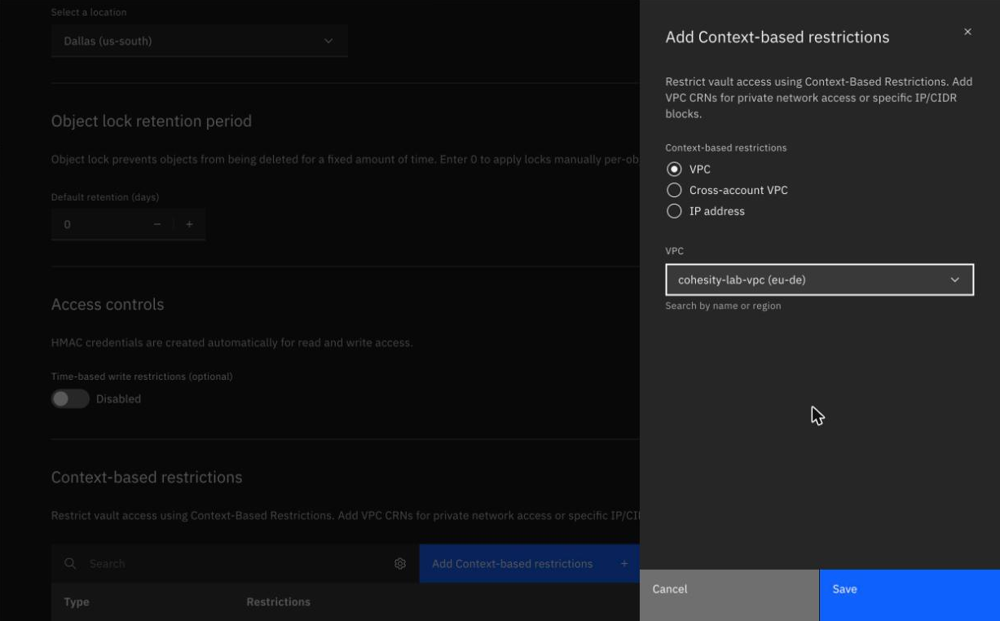
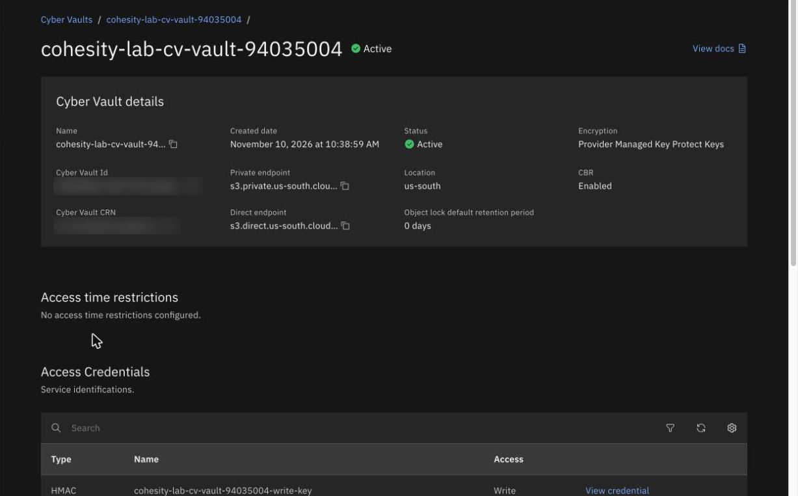

Create a vault: the settings you can't change later
By the end of this unit you'll know the settings on the Create Cyber Vault form, which default to change before you click Create, and what six failed creates did and didn't show.
Northgate Freight is a made-up haulier. Its backup admin has access to the Beta and is about to create the first vault. The console warns that the vault can't be modified once it's created.
The console screens come from our lab, and the six failed creates come from our earlier attempts. The vault is a Beta in us-south, and it has no SLA.
What the form asks
The form doesn't have many choices. You pick some of them, IBM fixes the others, and once you click Create the vault is set.
Suppose Northgate's admin gets the network wrong and wants to change it after the vault is created. What does the console say?
Show the answer
That the configuration can't be modified. The warning is at the top of the form, so check every setting before you click Create.
Which encryption choices does the form offer?
Show the answer
None. The form says: "IBM automatically creates and rotates FIPS 140-2 Level 3 certified encryption keys." You tick the licence agreement and click Create.
Four screens
These screens come from the IBM Cloud console in our lab. Click where you'd click. After two misses, the page marks the right place.

Three vaults are listed. Which column shows the default retention?
Show where
Right. Retention here means the default retention, and there's no maximum lock. It shows 0 days because the vaults have object lock on with no default rule.

The form has filled in a number by itself. Where?
Show where
Right. Default retention is 30 days, which would lock every object for a month. Set it to 0 so that Data Protect sets each object's lock from its archive retention (unit 2.4). There's no field for a maximum lock.

You want only your own network to reach the vault. Where do you pick the VPC that holds the cluster?
Show where
Right. Keep VPC, pick the VPC and click Save. The other choices are Cross-account VPC and IP address.

The vault is Active. Where are its two keys?
Show where
Right. Access Credentials lists a write key and a read key, each behind View credential. Give the write key to the backup cluster and keep the read key apart.
What does the default do?
Suppose Northgate's admin clicks Create without touching the lock field, so the form still says 30.
What does a default retention of 30 days do?
Show the answer
Every object would be locked for a month. The form says object lock stops objects being deleted for a fixed amount of time, and there's no field for a maximum lock.
What does a default retention of 0 mean?
Show the answer
Locks are set per object. The form says: "Enter 0 to apply locks manually per-object." The first vaults in our lab used 0.
What six failed creates tell you
In our lab, the first account we used tried six creates. Each one was accepted and then went to failed. Look at the six and work out the most likely cause.
# Retention (min/default/max) Network 1 1/0/3 VPC and IP range 2 0/0/3 VPC and IP range 3 0/0/3 VPC only 4 0/0/3 IP range only 5 0/0/3 IP range, new COS instance 6 0/0/3 IP range, Editor role added All six: HTTP 202, then failed in 17 to 40 s. The status record has no error text.
We changed the retention, the network, the COS instance and the Editor role in turn, and none of them fixed it. What's the most likely cause?
Show the answer
Most likely the account wasn't yet on the allow list. The six attempts ruled out the retention values, the VPC and the IP range, the COS instance and the Editor role. Only IBM can see the real cause. Later, one create from the same account became active in about 30 seconds.
What did each failed vault leave behind?
Show the answer
Two service IDs and two keys. The service made the keys before it failed. No bucket and no context-based restriction rule appeared. In our lab we deleted the keys by hand, so look for them after a failed create.
Watch for this. HTTP 202 only means the request was accepted, so check the status afterwards. In our lab, six creates went to failed in 17 to 40 seconds with no error text. Changing the settings didn't help, and the most likely cause was that the account wasn't yet on the allow list.
Three questions
What does the console say about changing a vault after it is created?
Show the answer
"Once created, the vault configuration cannot be modified."
Which value do you set on the lock field so that Data Protect sets each lock?
Show the answer
0. The form fills in 30, and you set it to 0.
A create returns HTTP 202, then goes to failed within a minute, with no error text. What is the most likely cause in our lab?
Show the answer
The allow list, most likely. IBM didn't confirm it. Six creates failed and one worked.
You know what to check before you click Create
The vault can't be modified once it's created, so check the form first. The form fills in 30 days of default retention, and you set it to 0. There's no choice of encryption. In our lab, six creates failed with no error text, most likely because the account wasn't yet on the allow list.